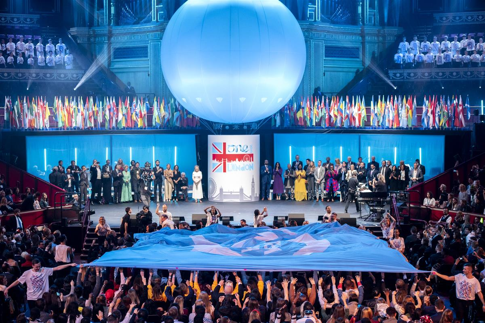

One Young World 2022 Manchester Summit, 5-8 September
Our Global Summit
The annual One Young World Summit brings together 2,000+ of the brightest young leaders from every country and sector, working to accelerate social impact both in-person and digitally. Delegates from 190+ countries are counselled by influential political, business, and humanitarian leaders such as Justin Trudeau, Paul Polman and Meghan Markle, and many others to harness the knowledge and skills needed for being impactful change makers.
Delegates participate in four transformative days of speeches, panels, networking, and workshops. They also have the opportunity to apply to give keynote speeches, sharing a platform with global leaders with the world’s media in attendance.
Delegates have the opportunity to challenge world leaders, engage with, and be mentored by expert industry influencers and make lasting connections. Together we celebrate our young leaders through social events and the unforgettable Opening and Closing Ceremonies.
To find out more about how to attend the One Young World Summit please follow this link.
SOURCE: ONE YOUNG WORLD
